) (рис. 10.6).
) (рис. 10.6).
Данная лекция рассматривает инструмент Художественные средства. В ней рассмотрены вопросы их использования и параметры элементов, относящихся к данному инструменту.

Инструмент Artistic Media (Художественные средства) позволяет имитировать эффекты рисования различными перьями, кистями и пульверизаторами (рис. 10.1).
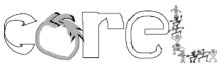
Рис. 10.1 Примеры рисования инструментом Artistic Media (Художественные средства)
Инструмент Artistic Media (Художественные средства) (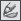) входит в состав группы инструментов Curve (Кривая) (рис. 10.2).
Инструмент Artistic Media (Художественные средства) включает в себя пять отличных друг от друга режимов работы. Необходимый режим можно выбрать на панели свойств при активном данном инструменте (рис. 10.3).
Инструмент Artistic Media (Художественные средства) может работать в следующих режимах:
Preset (Заготовка) — заготовка для живописи;
Brush (Кисть) — художественная кисть;
Sprayer (Распылитель) — распылитель;
Calligraphic (Каллиграфический) — каллиграфическое перо;
Pressure (С нажимом) — перо с нажимом.
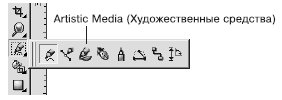
Рис. 10.2 Инструмент Artistic Media (Художественные средства)
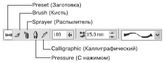
Рис. 10.3 Панель свойств при активном инструменте Artistic Media (Художественные средства)
Инструмент Artistic Media (Художественные средства) в режиме Preset (Заготовка) позволяет использовать кисти из списка имеющихся заготовок.
Чтобы применить инструмент Artistic Media (Художественные средства) в режиме b>Preset (Заготовка), выполните следующие действия.
Выберите инструмент Artistic Media (Художественные средства) ().
На панели свойств щелкните на кнопке Preset (Заготовка) (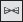).
Переведите указатель мыши в виде кисточки на рабочую область к месту начала рисования.
Нажмите кнопку мыши и, не отпуская ее, перетащите мышь, создавая объект.
Закончите создание объекта освобождением кнопки мыши (рис. 10.4).
Объекты, созданные инструментом Artistic Media (Художественные средства) в режиме Preset (Заготовка), представляют собой фигуры, обладающие параметрами, доступными для изменения на панели свойств (рис. 10.5).
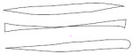
Рис. 10.4 Примеры заготовок штрихов
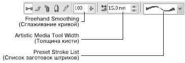
Рис. 10.5 Панель свойств при активном инструменте Artistic Media (Художественные средства) в режиме Preset (Заготовка)
Вы можете установить следующие параметры.
Freehand Smoothing (Сглаживание кривой) — степень сглаживания острых углов выбранного штриха.
Artistic Media Tool Width (Толщина кисти) — задает максимальную ширину выбранного штриха.
Preset Stroke List (Список заготовок штрихов) — список возможных вариантов создаваемых штрихов.
В общем случае созданный штрих представляет собой комбинированный объект, который можно превратить в кривые Безье командой Break Artistic Media Group Apart (Разбить группу Художественные средства на части) меню Arrange (Расположение). После выполнения данной команды можно редактировать внешний вид объекта на уровне узлов и сегментов с помощью инструмента Shape (Форма) () (рис. 10.6).

ПРИМЕЧАНИЕ. После разделения на части штриха, созданного с помощью инструмента Artistic Media (Художественные средства), опорная кривая удаляется как ненужный элемент.
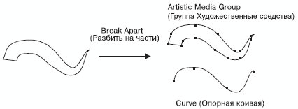
Рис. 10.6 Результат разбиения штриха на части
Инструмент Artistic Media (Художественные средства) в режиме Brush (Кисть) позволяет использовать различные кисти в виде сложных фигур с разнообразными видами заливок (рис. 10.7).
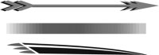
Рис. 10.7 Заготовки художественной кисти
Чтобы применить инструмент Artistic Media (Художественные средства) в режиме Brush (Кисть), необходимо выполнить следующие действия.
Выбрать инструмент Artistic Media (Художественные средства) ().
На панели свойств щелкнуть на кнопке Brush (Кисть).
Перевести указатель мыши в виде кисти на рабочую область к месту начала рисования.
Нажать кнопку мыши и, не отпуская ее, перетащить мышь, создавая объект.
Закончить создание объекта, освободив кнопку мыши.
Объекты, созданные инструментом Artistic Media (Художественные средства) в режиме Brush (Кисть), представляют собой параметрические фигуры, внешний вид которых можно изменить с помощью параметров, расположенных на панели свойств (рис. 10.8).
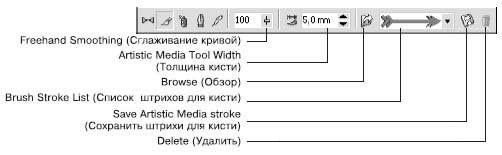
Рис. 10.8 Панель свойств при выбранном инструменте Artistic Media (Художественные средства) в режиме Brush (Кисть)
Freehand Smoothing (Сглаживание кривой) — степень сглаживания острых углов выбранного штриха.
Artistic Media Tool Width (Толщина кисти) — максимальная ширина выбранного штриха.
Browse (Обзор) — позволяет указать каталог, в котором хранятся файлы заготовки штрихов художественной кисти. По умолчанию местом хранения заготовок штрихов художественной кисти является папка \Application Data\Corel\Graphics13\User Draw\ CustomMediaStrokes. Каждая заготовка штриха представляет собой отдельный файл с векторным изображением в формате CorelDRAW Exchange Graphic (тип файла — Corel Presentation Exchange, расширение — CMX).
Таким образом, можно создать пользовательскую заготовку, сохранить ее в формате CorelDRAW Exchange Graphic (тип файла — Corel Presentation Exchange, расширение — CMX) в папке, где хранятся заготовки штрихов по умолчанию, либо воспользоваться кнопкой Browse (Обзор) для выбора папки с заготовками штрихов художественной кисти.
Brush Stroke List (Список штрихов для кисти) — список возможных вариантов штрихов, создаваемых кистью.
Save Artistic Media stroke (Сохранить штрихи для кисти) — позволяет сохранить выделенный объект в качестве заготовки штриха художественной кисти. По умолчанию местом хранения заготовок штрихов является папка \Application Data\Corel\Graphics13\User Draw\ CustomMediaStrokes, расположенная в папке настоек пользователя. Каждая заготовка штриха представляет собой отдельный файл векторного изображения сохраненного в формате CorelDRAW Exchange Graphic (тип файла — Artistic Media Brush, расширение CMX).
Delete (Удалить) — позволяет удалять из списка штрихи, созданные командой Save Artistic Media stroke (Сохранить штрихи для кисти) (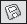).
В общем случае созданный штрих представляет собой комбинированный объект, который можно превратить в кривые Безье командой меню Arrange - Break Artistic Media Group Apart (Расположение - Разбить группу Художественные средства на части) (рис. 10.9). Отредактировать внешний вид такого объекта можно на уровне узлов и сегментов с помощью инструмента Shape (Форма) ().
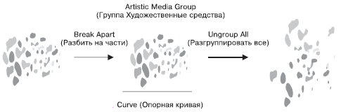
Рис. 10.9 Результат разделения и разгруппировки штриха
ПРИМЕЧАНИЕ. После разбития на части штриха, созданного инструментом Artistic Media (Художественные средства), элемент Curve (Опорная кривая) удаляется как ненужный.
Инструмент Artistic Media (Художественные средства) в режиме Calligraphic (Каллиграфический) позволяет использовать кисти, рисование которыми напоминает рисование тушью плакатными перьями (рис. 10.10).
Рис. 10.10 Пример рисования каллиграфическим пером
Чтобы применить инструмент Artistic Media (Художественные средства) в режиме Calligraphic (Каллиграфический), выполните следующие действия.
Выбрать инструмент Artistic Media (Художественные средства) ().
На панели свойств щелкните на кнопке Calligraphic (Каллиграфический) (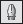).
Переведите указатель мыши в виде кисти на рабочую область к месту начала рисования.
Нажмите кнопку мыши и, не отпуская ее, перетащите мышь, создавая объект.
Закончить создание объекта, освободив кнопку мыши.
Объекты, созданные инструментом Artistic Media (Художественные средства) в режиме Calligraphic (Каллиграфический), представляют собой фигуры, внешний вид которых можно изменить настройкой параметров на панели свойств (рис. 10.11).
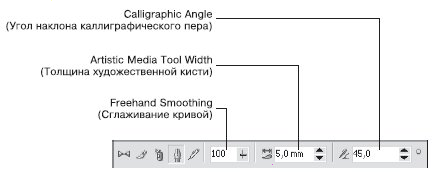
Рис. 10.11 Панель свойств при выбранном инструменте Artistic Media (Художественные средства) в режиме Calligraphic (Каллиграфический)
Freehand Smoothing (Сглаживание кривой) — степень сглаживания острых углов опорной кривой.
Artistic Media Tool Width (Толщина художественной кисти) —максимальная ширина выбранного штриха.
Calligraphic Angle (Угол наклона каллиграфического пера) — наклон виртуального каллигрфического пера.
В общем случае созданный штрих представляет собой комбинированный объект, который можно превратить в кривые Безье командой меню Arrange - Break Artistic Media Group Apart (Расположение - Разбить группу Художественные средства на части) (рис. 10.12). Редакторские изменения внешнего вида такого объекта можно выполнить на уровне узлов и сегментов с помощью инструмента Shape (Форма) ().
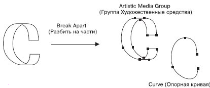
Рис. 10.12 Результат разделения объекта на части
ПРИМЕЧАНИЕ. После разделения на части штриха, созданного инструментом Artistic Media (Художественные средства), элемент Curve (Опорная кривая) удаляется как ненужный.
В данной лекции вы еще ближе познакомились с приемами работы, которые очень часто используются в редакторах растровой графики. Отличительной чертой работы с растровой графикой как раз и является преобладание действий, основанных на использовании кистей и свободном рисовании с помощью мыши или специального электронного пера (stylus pen).